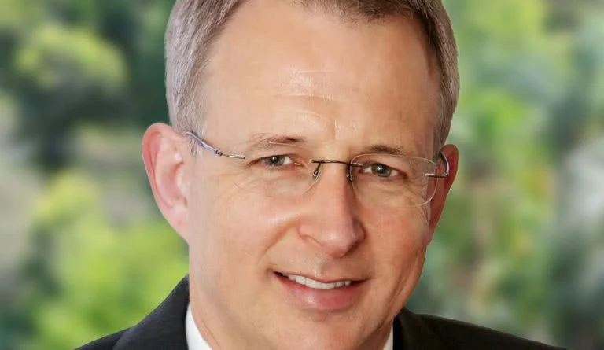
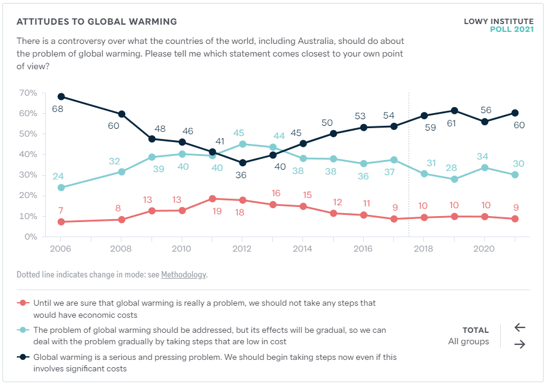

Labor's May 2022 federal election win seems to confirm the approach taken by US political analyst David Shor.

The 1 in 20: Paul Fletcher will become the sole remaining Liberal member in the 20 federal seats with the highest number of people holding postgraduate degrees.
I don't normally feel any great need to forecast the Clear And Obvious Future Of Australian Politics, especially the day after federal elections.
But this election can be seen as making a case for a particular thread of political thinking: the thinking championed by US political analyst David Shor. And I want to explore that a little.
I've written about Shor before on Troppo. Here are two key tenets of his thinking:
- Education explains more of the electoral movement happening now than does income or class.
- Parties that keep attention on their most popular ideas will do better than those that talk about their least popular ideas.
I think these notions tell us something about Labor's win.
The data
Just before I jump in, note that:
- I don't have much time to analyse figures yet.
- Nor do I have all the data, anyway.
- And I'm no expert in election data analysis either.
- But in the finest journalistic tradition, I'm also too impatient to wait until we have better data, or leave the analysis to better-trained people.
So I've taken Sunday morning's AEC data and mushed it hastily together with some education data from Twitter user @EthanOfHouseK, who maintains the very good Armarium Interreta polling website. (Ethan's data takes 2016 Census data on education and maps it to the 2022 electoral boundaries.)
It's important to note that the resulting ranking is not some sort of scientific proof. It's suggestive. In particular, it's potentially subject to one of the four great statistical fallacies, the ecological fallacy. This is the fallacy where you take inferences about a group and use them to make inferences about the nature of individual group members, and it can mislead you badly. The ecological fallacy is hard to explain simply, but a useful try at it in an electoral context is here.
With that warning, my first rough try at extracting some suggestions from the election results.
Education matters
In the US, David Shor has spent some time pushing the idea that education is becoming an important axis of politics. That idea has been paid a little attention here, but I don't have the statistics background to apply it to Australia's 2022 election results.
So here's the crude thing I can do – bring you a list of Australian federal electorates with the highest number of postgraduate degree-holders. I chose this as the best proxy for education; if you sort the list a different way, by lowest level of non-degree holders, it looks not that different.
The summary version of that list: Australia's highest-education seats have pretty much deserted the Liberal Party. These seats have moved to parties that want action of some sort against global warming, and to improve electoral integrity.
Today just one of the top 20 highest-education seats remains in Liberal Party hands: outgoing Communications Minister Paul Fletcher's seat of Bradfield, just north of Sydney Harbour. Bradfield also happens to have the country's highest median household incomes.
Below are the first 16 seats you get by postgrad numbers, with a little commentary on each:
- Canberra – The most postgrad-heavy seat has no official AEC swing yet, but the Liberal vote collapsed by around 8 percentage points, and they are running third behind the Greens for the first time. Labor will win. Side note: the ACT's Liberal senator looks likely to lose his seat to an independent, conservationist (and former Wallabies captain) David Pocock. [AEC. ABC News.]
- North Sydney – The second most postgrad-rich seat currently has the 6th biggest swing. Teal independent Kylea Tink has claimed victory. [AEC. ABC News.]
- Bradfield – No official AEC swing yet. Paul Fletcher (pictured below) will become the sole remaining Liberal member in the 20 federal seats with the highest number of people holding postgraduate degrees. But Fletcher will enjoy a much-reduced margin, courtesy of a Teal independent who pushed the Labor candidate into third place in this North Shore Sydney seat. [AEC. ABC News.]
- Kooyong [AEC. ABC News.] – Currently 3rd biggest official swing. You've heard about this already; Treasurer Josh Frydenberg has lost his eastern Melbourne seat to Teal independent Monique Ryan. Labor and the Greens got 12 per cent of the vote between them. [AEC. ABC News.]
- Melbourne – Greens leader Adam Bandt's seat; he got a small swing to him. [AEC. ABC News.]
- Higgins – Used to be Peter Costello's seat, and contains the upper-crust Melbourne suburbs of Toorak, South Yarra and Armadale. But after a swing of around 6 per cent away from the sitting Liberal MP, Greens preferences will put a Labor MP in. [AEC. ABC News.]
- Grayndler – Albanese's compact inner west Sydney seat stays an easy ALP win. [AEC. ABC News.]
- Macnamara – The seat around Melbourne's St Kilda, where the ALP candidate should win easily and the Liberals are running 3rd for the first time. The Greens got a big swing. [AEC. ABC News.]
- Ryan – The Greens should win this western Brisbane seat because the Liberal vote collapsed by around 11 per cent and the Greens gained 11 per cent. [AEC. ABC News.]
- Wentworth – Still counting, but currently the biggest swing in the country, replacing the Liberals' Dave Sharma with independent Allegra Spender, granddaughter of two famous former Liberals. [AEC. ABC News.]
- Sydney – An easy win for former Labor deputy leader Tanya Plibersek, but notably the Liberals may run third for the first time, behind the Greens. [AEC. ABC News.]
- Bennelong – The ALP got a decent swing and may well beat the Liberals in John Howard's old North Sydney seat. [AEC. ABC News.]
- Curtin – Currently 8th biggest swing. Teal independent Kate Chaney, another scion of a Liberal family, should beat the sitting Liberal in this Perth seat. [AEC. ABC News.]
- Warringah – Easy hold for Teal independent Zali Steggall, who has a job for as long as she wants it. [AEC. ABC News.]
- Fenner – Labor's Andrew Leigh, a brilliant former professor of economics and the ultimate postgrad candidate, got a decent swing to him, the Greens candidate got a smaller swing, and the Liberal candidate lost a bunch of votes. [AEC. ABC News.]
- Goldstein – 4th biggest swing. Teal independent and former ABC journalist Zoe Daniel beat the Liberals' Tim Wilson. [AEC. ABC News.]
(Note that the really relevant AEC data here would probably be seats sorted by swing away from the Liberal/LNP National candidate. But I don't know how to produce that list yet.)
Now remember that the analysis above is somewhat removed from decent statistical thinking. It could be that this ranking is no more relevant than, say, the ranking of seats where people own the most smartwatches. Education is strongly correlated with all sorts of things, including income, your Apple Store bill, physical fitness and the likelihood that you've listened to Schoenberg on Spotify. We'll need a lot more analysis before we can say with real confidence that there's more than association going on here. It's difficult even to untangle the association between income and voting from the association between income and education.
Nevertheless, it seems to me that this list suggests a story about the 2022 election. And it's largely David Shor's story. The seats with the most highly-educated people had very big swings. Sure, this story says, the ALP may be struggling to hold on to some traditional "working-class" seats just like the US Democrats. But it's holding on to enough of those seats to keep it alive, and winning enough high-education (and often high-income) votes in these seats to deliver overall victory. And the ALP is winning these high-education votes because it represents a bundle of beliefs that large numbers of high-education voters agree with.
This would also help us to understand why the 2022 election is an inner-city story, with all bar one of the Coalition's losses coming in inner-city electorates. The inner cities are where the highly-educated have been settling, at least until COVID struck.
One final note: for those who are interested, the general influence-of-education story is also Thomas Piketty's story. He co-wrote a 2021 paper called Brahmin Left versus Merchant Right: Changing Political Cleavages in 21 Western Democracies, 1948-2020. That paper argues that "electoral behaviors have become increasingly clustered by education group", and that we've seen a rising divergence between education and income as predictors of voting behaviour. My summary of the effect on voting: "class" matters less and less; "sociocultural issues" matter more and more.
Talking about popular issues matters
During the campaign, the left in particular produced a lot of commentary on how Labor didn't really take official stands on too many issues. (My own view is that this aspect of a party's presentation is a little overrated anyway; parties' performance in government often bears little resemblance to their official policy stances, and they are better off keeping as much policy freedom as they can.)
But Labor did have some positive things to say, and they were mostly on what we might call "caring issues": aged care, health care, child care. Action in these areas seems popular; they're among the ideas Shor would probably argue Labor should campaign on.
And that plan worked: Australian Labor will win office federally for just the fourth time since World War II. No small achievement.
The Liberals, meanwhile, did the opposite. They kept defending their climate policy, while failing to take sufficient notice of the clear polling data showing that a big gap had opened up between them and the electorate. They also defended, half-heartedly, their failure to legislate for a federal Independent Anti-Corruption Commission (ICAC). Both Labor and the Teal independents drove well-organised and well-supplied tank columns right through those gaps in the line.
What's going on with global warming?
That brings us to climate change. The Teals' wins focuses attention on the reality that public opinion has moved here since the Coalition used it to defeat Labor in 2013. (See the 2021 Lowy Institute poll below,) Indeed, it makes you wonder whether the ALP could have killed off the Teals' insurrection and won power in its own right by reviving one of their own previous carbon pricing schemes from the 2009-2013 era. I genuinely don't know.

It may be that global warming is moving up along the opinion curve towards overwhelming acceptance, the way gay marriage did a few years ago.
But the electoral calculus may also be more complicated than that. The Teal independents had global warming as their signature issue. But through the campaign, they managed to avoid saying very much about what they actually believed should be done. They certainly didn't get much pressure to commit to a particular carbon pricing model, or even to a suite of less efficient anti-warming measures. In a sense, they did what Labor couldn't do: get elected on a vaguely pro-climate platform without much talk about the price we will pay for acting against global warming.
In case you're wondering, I absolutely support paying that price. But I have a great deal of sympathy for Labor's position: it has been punished by both the voters and the Greens at different points for being very specific about what it would do, and actually doing it. Voters do this a lot; we like the idea, but then vote against the reality when somebody blames it for everything not being perfect.
This election, Labor elected to do just what the Teal independents did: say as little as possible about potentially painful global warming policies. But for Labor, "as little as possible" almost necessarily involved ruling out carbon pricing. Having implemented it under Rudd and Gillard, Labor had to disown it now. Knowing the 2022 result, I'm still not sure they should have done any differently if they wanted to win government.
The future
How does all this play out over the next three years and beyond? I have no real idea.
But it does seem to me that Labor may have more freedom to act on global warming, as Liberal opposition to anti-warming policies almost inevitably weakens a bit.
And here the Liberals must worry about a nasty wedge. As they explore easing off their less-change position, they will face some angry opposition. Barnaby Joyce has already hit the media since the loss to declare that the Nationals "did their job". And he's sort of right: they held their 16 seats and may pick up one or two. In fact, Barnaby is also sort of right to try attacking Labor as smarty-pants city folk. Increasingly, they are that, in just the way he means it. The problem for the Coalition is that the Liberals would like some smarty-pants city folk to vote Liberal. The Teal independents have sped up those folk's migration away from the Liberals. Once seats go independent, they're typically hard to win back.
And of course the Liberals must also worry about Rupert Murdoch's divisions of massed commentators.
The very policy which Barnaby and the Murdoch commentators desperately wants to keep is becoming poisonous in urban Liberal electorates. Without change, the Teals may thrive and Coalition election wins may grow tougher still. At worst, the Liberals could be forced into the politics of cultural alienation that Donald Trump has forced on the US Republicans. And such politics seems unlikely to succeed here.
How is the LNP supposed to win back seats without changing climate policy?
Mind you, politics is always throwing up facts which ruin these neat scenarios. Remember how I said I didn't have any real idea how this all plays out? I meant it.
One more (un-Shorist) thing
One other lesson strikes me as important in this election. It's this: Teal independents have overnight become more successful in the lower house than the Greens.
If you're a Green, that's a little embarrassing. Both groups profess to have the same signature issue: climate. But the Greens have spent decades winning a single lower-house seat, before winning maybe three more at the 2022 vote. The Teal independents have won maybe five at their first try.
It's hard to avoid the conclusion that the Greens have been weighed down by a number of far-left policies for which they cannot win acceptance from enough centrist voters. Like the Liberals, the Greens turn out to have a vulnerability that previously went unexploited: their pro-climate policies are very attractive, but the rest of their package looks much less inviting. The Greens themselves may prove vulnerable to the Teal insurrection next time around.
For those who remember him, I sometimes think of the Teals as the return of Don Chipp. Time will tell if that's right, but Chipp's political creation, the centrist and pro-environment Australian Democrats, thrived. Then the party's soft left faction, led by Natasha Stott Despoja, turned it towards Greens-type economic and social policies – and the voters pretty much wiped it out overnight.
This isn't a Shorist point. Indeed, it's kind of anti-Shorist, a reminder that you can talk as much or as little as you like about things, but your position on the political spectrum still matters. In this sense, the Greens as well as the Liberals have something to think about after this election.
Note: Updated and reworded on 23 and 24 May 2022 and on 21 January 2024.
Thank you David Walker for this useful analysis. You could call it the "Revenge of the intellectual elites", who for years have been conflated in the conservative press with the economic elites who have imposed neoliberal strictures on our society. They have broken out now. Having said that, I'm not so sure that your description of the Greens policy platform is accurate. Rather than "weighed down by a number of far-left policies",I think it's fair to say that they had been weighed down by number of clumsy political missteps, such as walking out on Pauline Hanson's maiden speech. Their scepticism about free trade and free foreign investment, for example, marks them as much closer to public opinion than either of the two major parties. They seem far left primarily because the two majors have drifted off to the free-market, small government right. Their platform is informed by science far more than the Coalition's, for example, and on science-based policy they will have the last word.
Thanks for this David
Already a million tendrils of possibility are radiating out from the election result. Lots to think about regarding what's possible and by 'what's possible' I mostly DON’T mean things I can specify in advance. The things large and mostly small all of us being ambitious for ourselves might make possible.
We're moving towards the New Zealand and European 'log-rolling' model of democracy and I'm optimistic about that. If they've got their heads screwed on, the ALP will govern to keep the independents thriving — which gives them every chance of governing through the centre and through the community — as they did with the Accord.
The result would be the return of the politics of community and consensus as I tried to articulate here.
No-one has done it since the Hawke/Keating years. The alternative for the right is culture war which leaves scorched earth in terms of policy achievements, and as they're finding out scorched earth in terms of their own long-term interests — they're headed back to their pre-Liberal United Australia Party roots.
For the left the alternative is stasis, what I call policy vegetarianism, and playing the policy hero, so the media can chip away with gottcha this and gottcha that, amplifying your political enemies' misrepresentations of you and your motives and eventually bring you down.
Oh, and this was my favourite sentence from your post.
I'm writing to the authorities to have your journalist's licence revoked — this kind of fence-sitting will mean you never get to sit on the ICB (The Insiders' Couch of Bullshit). But you will be flown to the recently astro-turfed Alt-Centre headquarters for a full induction (complete with hazing).
I am aghast that Zimmerman lost, likely followed by Frydenberg and Sharma. Apart from Tim Wilson, it almost appears as if the TEAL’s targeted the most reasonable and electable in the Liberal party. They were very well funded by somebody - we will find out next year. Dutton is unbackable as the next leader now. Not a great outcome for out future. Do you agree that this was largely a completely legal hack of our preferential voting system? Anti-coalition independents masquerade as …independent, and keep quiet about their preference deal with the ALP. If they come second, then they are likely to win on ALP preferences. I suspect that many Kooyong voters who voted independent and thought they were registering a protest vote will be unhappy with the result.
I think they are far left because they focus on indigenous issues, the gender pay gap and gender ideology - nothing to do with sustainable development and the environment. I was a rusted on Green voter in the 80s and 90s but they lost me 25 years ago.
I think you're being over cynical and over conspiratorial. Perhaps I'm just gullible, but Simon Holmes à Court's story is that he's trying to professionalise independents and as such built an organisation that could provide their organisations with the same kinds of services an 'incubator' would provide startups in other sectors. He said that when people ask Tony Windsor what it takes to become a successful independent and ask him to help, his first question is "can you hold a town hall meeting in which 100 locals will each donate $1,000. It's pretty infuriating that politics is like this, but like this it is — and that's just your first $100,000 when you need closer to a million. These are very wealthy electorates teeming with people who feel their concerns for the country are being ignored. They went through quite elaborate processes of choosing local candidates who can win. I wouldn't be expecting them all to line up with the ALP against the Libs when push comes to shove and it's not over the Teal's core issues. They certainly know where their own interests lie which is NOT to be seen to choose the ALP over their constituency's preferences for the Libs. Windsor and Oakshott knew they would be in trouble siding with the Gillard Government but did it because they thought it would be a better government (or that's what they said, and made a choice against their own political self-interest so I believe them).
As in the Labor Party, so in the Liberal Party: centrist candidates tend to win pre-selection more often for marginal seats than for safe ones. Hence their losses at this poll. Call me naive, but I don't think the Teals represent a "legal hack of our preferential voting system". There was an interesting opportunity for centrist pro-climate candidates at this election. The Teals and their largest funder, Simon Holmes à Court, took it, and the results suggest it was bigger than most people had realised. I recall from my finance reporting days that Simon's dad was good at spotting an opportunity, too. If there's a mystery as to the Teals' funding, it's gone right past me. When I reported on Simon's dad, I presumed that old Hacca had a bit of coin. I was not alone: Wikipedia describes Robert Holmes à Court as "Australia's first billionnaire", though he lost a lot of that after the 1987 crash. Simon got 16.7 per cent of the estate.
Climate 200 funded less than 50% — often well under 50% of the campaigns. Anyway, what are we supposed to be talking about here? The major parties take in large donations from large donors. If that's not 'hacking' the system, how is picking up money from a crowd funder (I think Holmes á Court claims to have tossed a few hundred thousand of $12 mil into Climate 200)?
It seems to me writing as David did before we actually know much that the climate wars are over and the punters want change. The ALP did not get a lot of this desired change because they went for a small target strategy. If people want action on climate would the ALP deliver on it. Maybe.Maybe not. The big losers , Clive Palmer's companies who donated again to the UAP, Murdoch press and Sky after dark.
Isn't this just Hotelling's law working as it one might expect? The Liberals moved further to the right and your centre-right voter who is still in touch with reality versus conspiracy theories, denial of things that are obvious to the average person (e.g., the barrier reef falling apart, vaccines working better than medicine previously used to deworm horses etc.) that now plague the further right had nowhere to go. So someone occupied the middle -- and it worked for them, since they would have been more palatable (closer to their views) to vote for than a left-leaning Albanese (and the other baggage that the Labor party has with affluent people) in moderate right leaning electorates.
You're absolutely right. There's still a distribution from left to right, even though the demographics have changed over the years. The Liberal Party can move back to the centre and close this hole if they want.
The Teals appear to have targetted more centrist Liberals in safish seats. The ABC graphic on election night made that pretty clear. Why did they not target RW candidates in more marginal seats? I suspect that many Kooyong voters who put Ryan first and Frydenberg second did not realise that if Ryan came second on first preferences she would win the seat. It was be facinating to see research on whether these people are happy with the result of Frydenberg losing. I do not think they realised that voting for Ryan was actually voting for Dutton to be the Liberal leader.
By "hack", I think I am referring to voters' lack of understanding of the preferential voting system - see above. Commentators seem confident that Dutton will be unelectable. We thought the same thing about Abbott!
The idea that Kooyong voters did not realise they might push Frydenberg out is an interesting one. My own experience, for what it's worth (possibly not much), is that an unusually high proportion of people in Kooyong knew exactly what the stakes were. Also weighing against this idea of an accidental loss is the sheer consistency of the big swings in high-education seats, which suggests an underlying preference shift. Costello's old seat of Higgins, with no Teal independent running, will nevertheless end up in Labor hands.
Good point here – it's not clear how much Simon Holmes a Court bankrolled the Teal independents, as opposed to just giving them a bit of a kick-start.
"Why did they [i.e. the Teal independents] not target RW [i.e. right-wing] candidates in more marginal seats?" My suspicion is that the Liberal left (that is, moderates) have tended to win the preselections in the most marginal seats, because in these seats ideological purity comes second to just winning. These seats are marginal in part because they contain many high-income voters sympathetic to action against global warming and to a federal ICAC. Result: If you target climate and corruption issues, you will mostly target Liberal moderates.
Lots of seats were targeted by similar candidates. I'm in Boothby (centre-right, well educated, middle-class) and we had one (Jo Dyer) but she got nowhere, so there are other factors in play. She even mentions Zali Stegall on her webpage (https://www.dyerforboothby.com/) so she must have understood some of the dynamics. Given this, perhaps one might wonder how the small number that won gained enough traction.
I acknowledge the responses on the issue of the Teals. But there is still an interesting aspect to this. The rise of these “independents” is new and rather sudden. I put it in quotes because they are not independent of each other. They have a concerted agenda – openly campaigning against the Libs – almost like a party. This is new and demands explanation and analysis. It’s not anti-democratic in principle and will work its way through the system. I thought “hack” was not a bad way to describe it.
Conrad, checking belatedly, I note that Boothby is only the 39th most educated seat by postgrads – so I could argue that Jo Dyer didn't really have the wind at her back in the way that some other Teals did.